Первые результаты, ч.4
151. Если Вы храните кровь, каким способом употребляете её позже?*
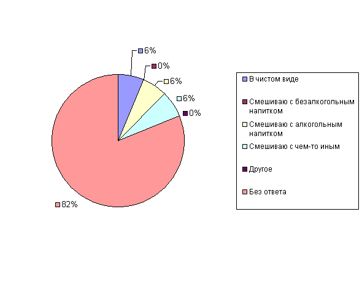
152. Какие заменители используете, если не можете достать кровь?*
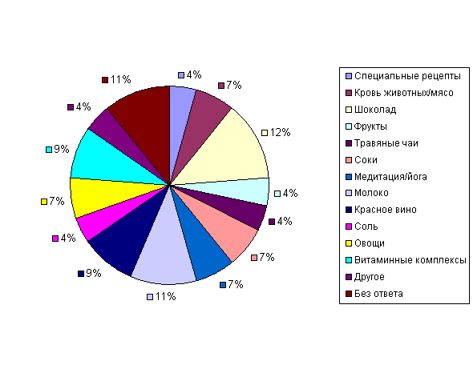
153. Если Вы санг, знает ли Ваш врач об этом?
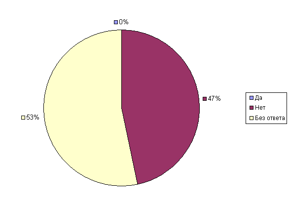
154. Проверяете ли Вы регулярно свою кровь?
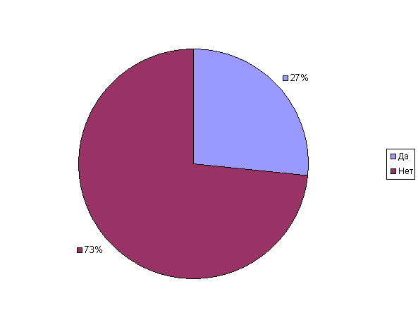
155. Имеете ли Вы тенденцию превышать количество употребляемой крови, если предоставляется возможность?
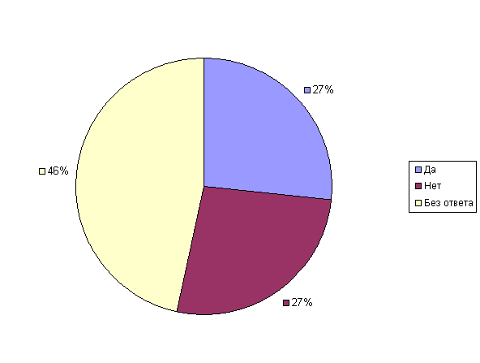
156.Изменились ли Ваши способы питания и способности с годами?
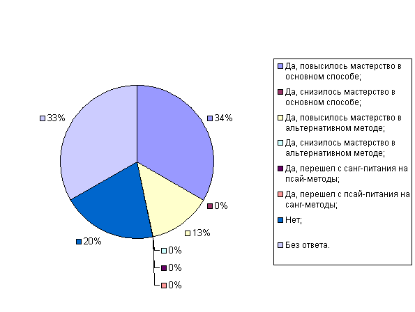
157. Были ли Вы когда-либо донором?
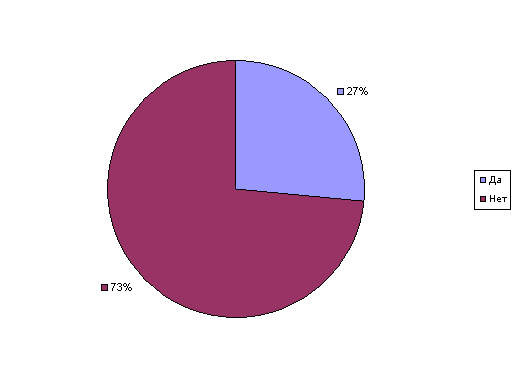
158. Как долго Вы были донором?
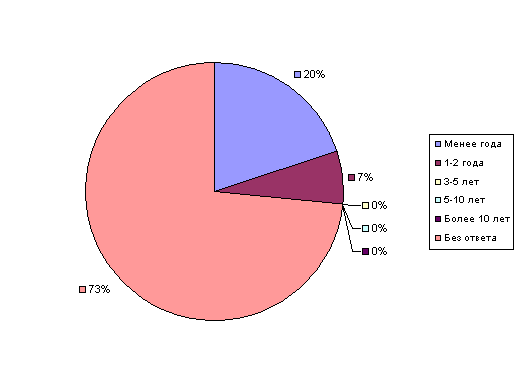
159. Как Вы стали донором?
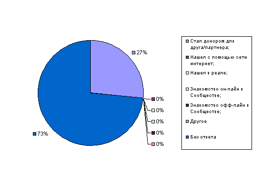
160. Для скольких вампиров Вы были донором?
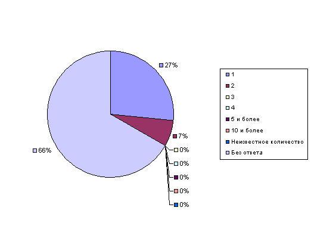
161. Что именно Вы отдавали?*
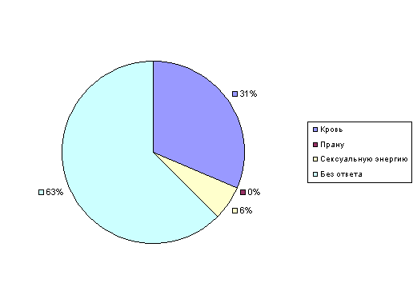
162. Если вы являетесь донором для вампира, и это состояние вдруг прекратится, будете ли Вы искать другого вампира, чтобы быть донором ему?
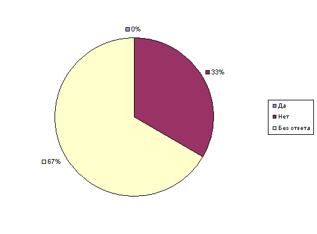
163. Являясь донором, вовлечены ли Вы в личные стороны жизни Ваших вампиров?
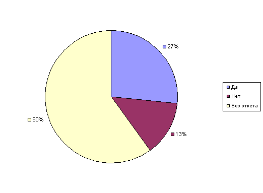
164. Являясь вампиром, осведомлены ли Вы о фактах личной жизни своих доноров?
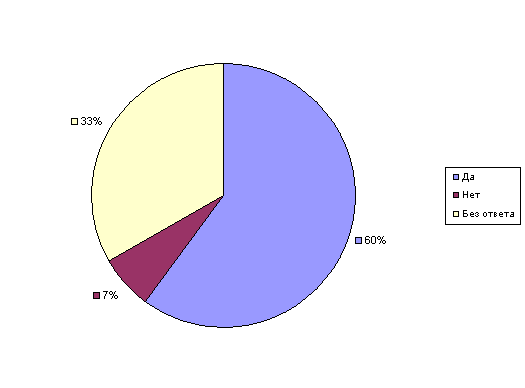
165. Кормите ли Вы более одного вампира (являетесь не эксклюзивным донором)?
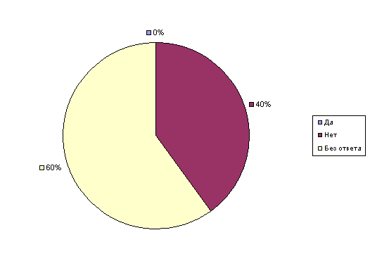
166. Вы одобряете факты наблюдения местными, федеральными и международными правоохранительными органами за деятельностью Сообщества?
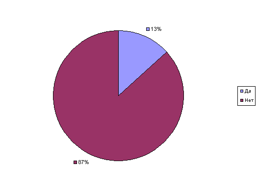
167. Как Вы относитесь к вампирским организациям, совершающим продвижение посредством музыкальных клубов и т.п.?
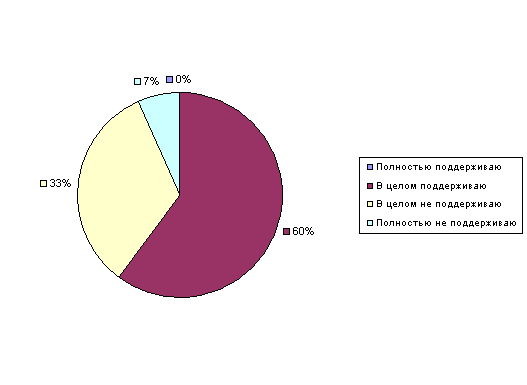
168. Как Вы относитесь к различным шоу, телепередачам на вампирскую тематику, пропагандирующим лайфстайл обычному населению? Вы согласны с ними?
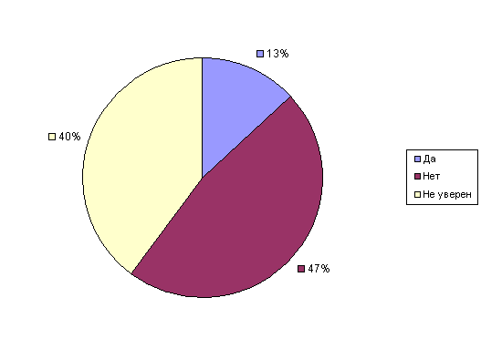
169. Считаете ли Вы, что подобные публичные шоу могут помочь людям понять реальную природу вампиризма и должным образом осмыслить существующие факты?
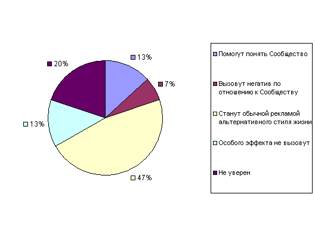
170. Наличие в Сообществе Сангвинаров…
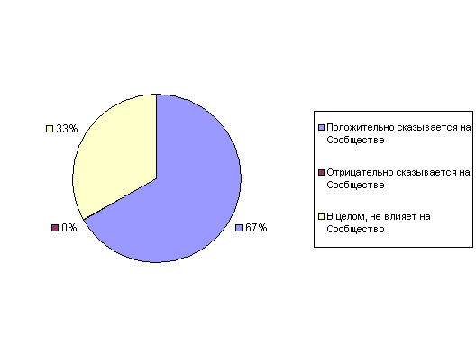
171. Наличие в Сообществе Энерговампиров…
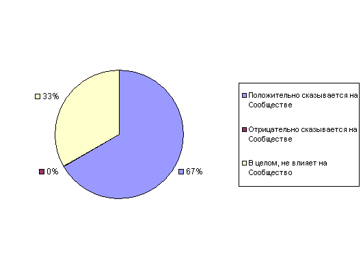
172. Наличие в Сообществе Гибридов…
173. Наличие в Сообществе представителей Другого Народа (OtherKin)…
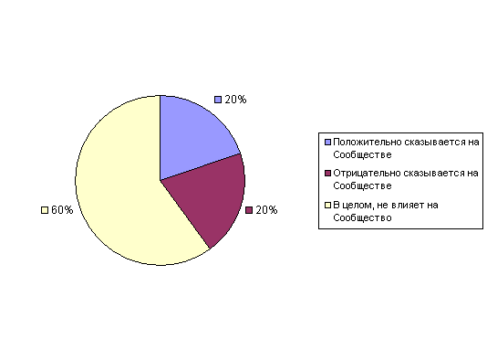
174. Признание Сообществом концепции Симбионтов…
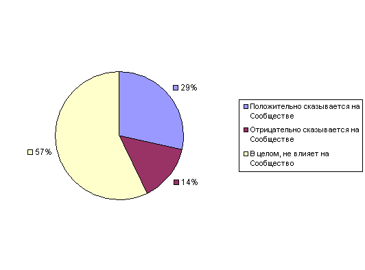
175. Признание Сообществом концепции териантропии…
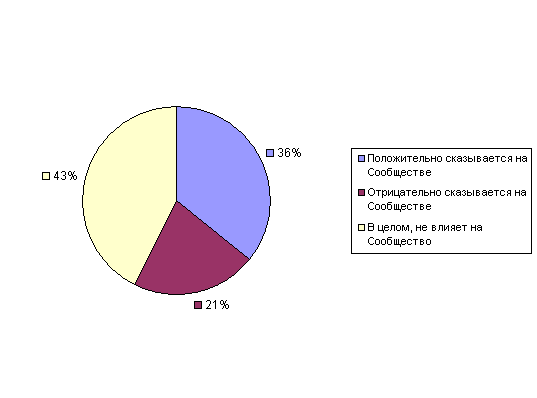
176. Признание Сообществом концепции трансмогрификации…
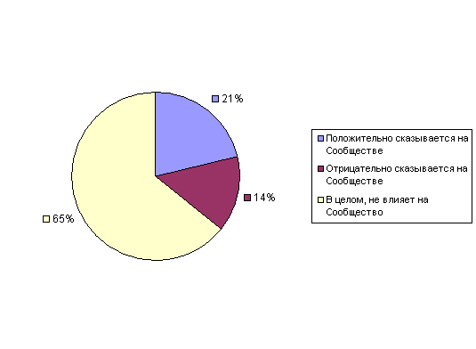
177. Религиозная толерантность – необходимая составляющая сообщества вампиров:
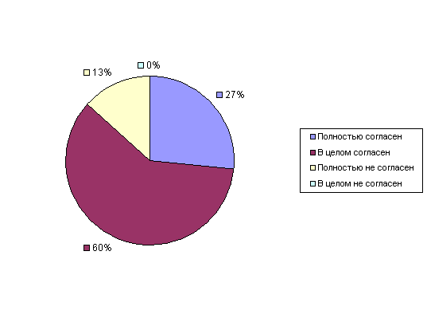
178. Сообщество вампиров делает четкие и правильные шаги в сфере признания и понимания его реалий обычным обществом:
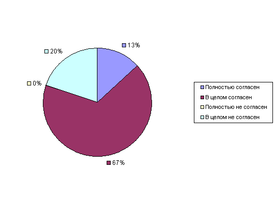
179. Сообщество вампиров должно иметь общий универсальный документ, отражающий этические нормативы:
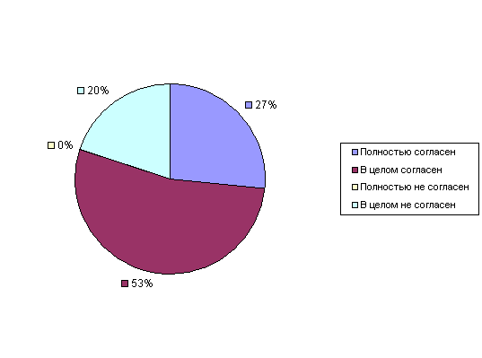
180. Знакомы ли Вы с «Чёрной Вуалью»?
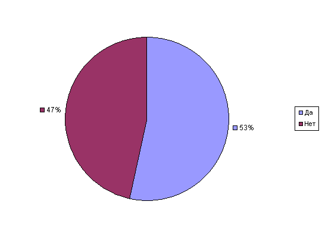
181. Считаете ли Вы, что «Чёрная Вуаль» является на сегодняшний день актуальным документом?
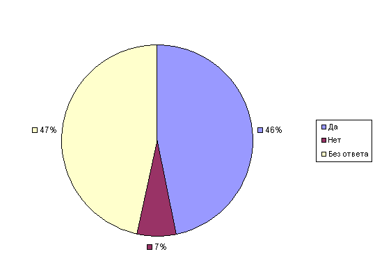
182. Является ли «Чёрная Вуаль» Вашим персональным этическим кодексом?
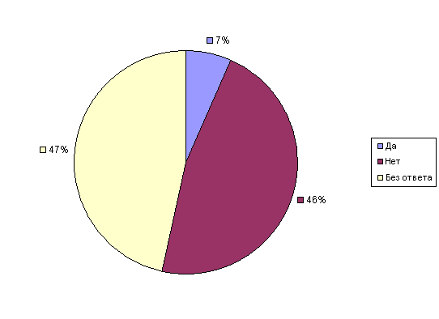
183. Вы считаете вампиризм временным явлением или состоянием, длящимся всю жизнь?
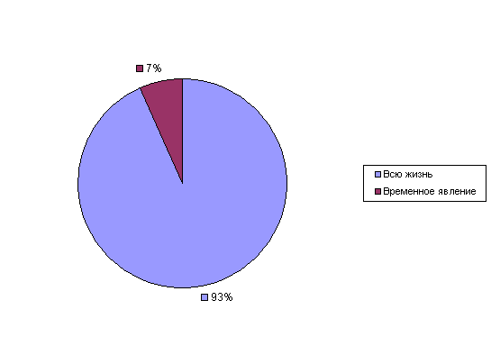
184. Каким Вы видите Сообщество через 10 лет?*
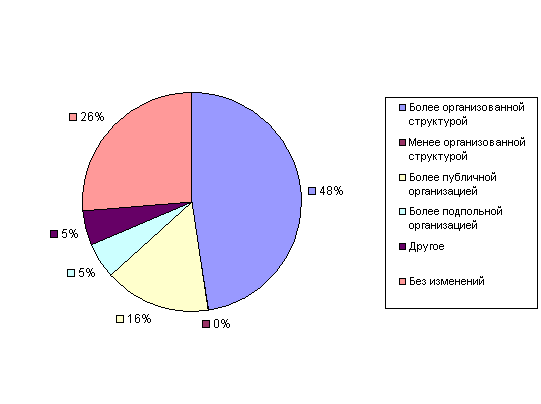
185. Псай-эффекты будут признаны мейнстрим-культурой в ближайшие 25 лет.
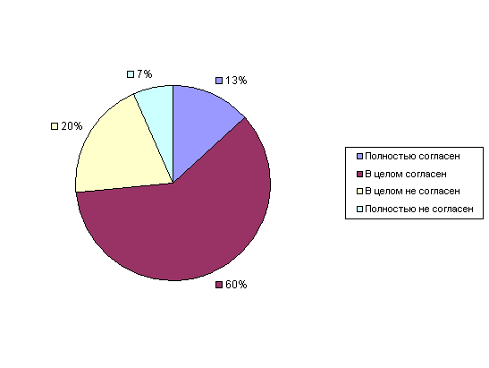
186. Псай-эффекты будут признаны наукой в ближайшие 25 лет.
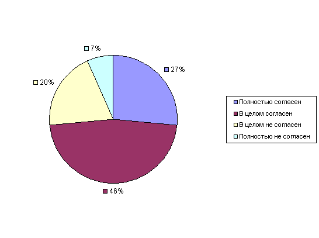
187. Как Вы считаете, будет ли Сообщество более известным среди обычных людей?
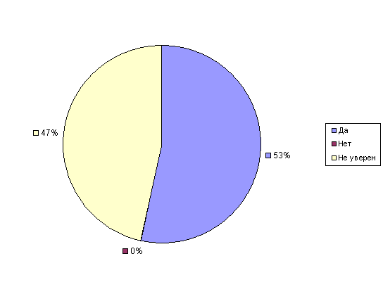
188. Если да, то какие эффекты это произведёт?
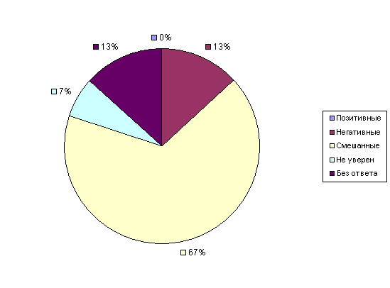
189.Как Вы считаете, будут ли язычество, оккультизм, магия более признаны в Сообществе?
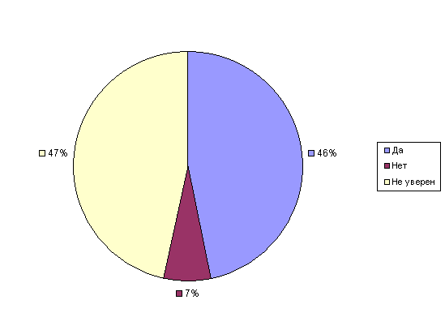
190. Как Вы считаете, будет ли Сообщество более признанным среди обычных людей?
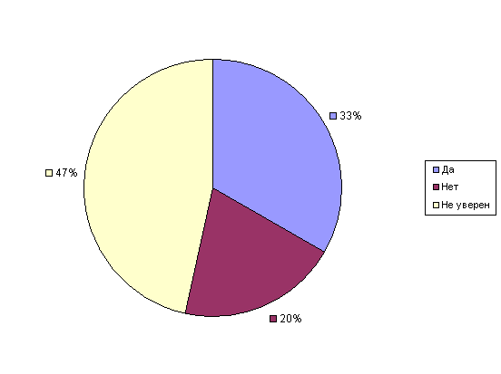
191. Для полноты картины (при желании, но не обязательно), завершите, пожалуйста, Тест Кейрси.
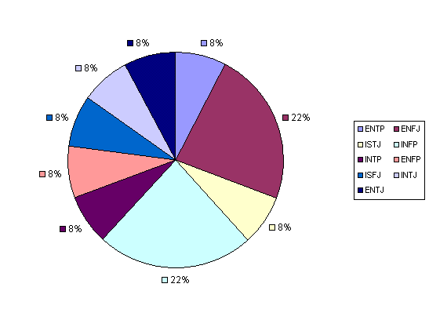
- Первые результаты, ч.1 / Вопросы № 1-50
- Первые результаты, ч.2 / Вопросы № 51-100
- Первые результаты, ч.3 / Вопросы № 101-150
- Первые результаты, ч.4 / Вопросы № 151-191
> Главная страница текущего исследования
> Главная страница результатов ЦСОиАСИ
[Наверх]